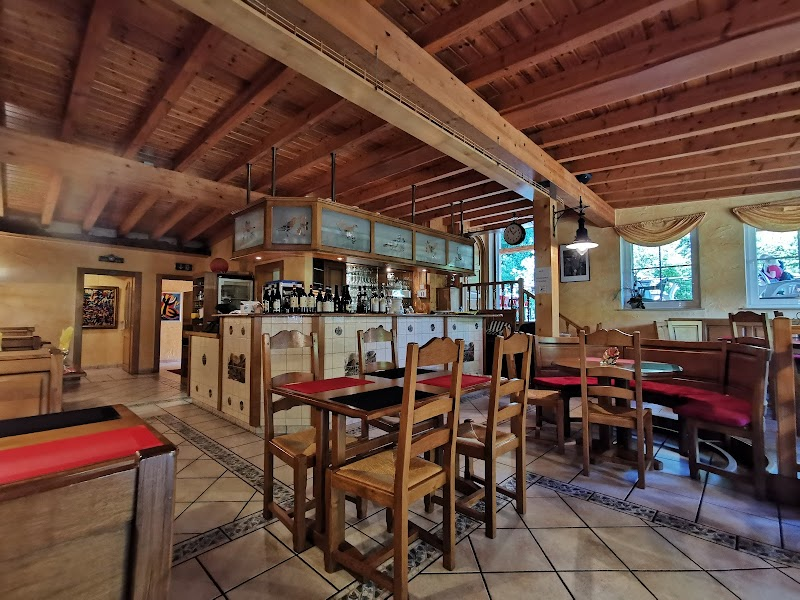

La salle · chalet de bois, cœur du site minierUne table maison posée entre la forêt et le patrimoine minier — au terminus des sentiers, là où les vieilles locomotives dorment encore sur leurs rails.
Am Zechenhaus n'est pas une adresse de centre-ville. On y arrive par les sentiers de l'Ellergronn, la réserve naturelle qui borde Esch-sur-Alzette : forêt, ruisseaux, et les bâtiments industriels de l'ancienne mine tout autour.
Wagonnets et voie étroite, halle aux locomotives, musée national des mines : le décor raconte le passé minier du bassin. La table, elle, réchauffe les randonneurs, les familles et les visiteurs du centre nature.
Plafond à poutres apparentes, bar tapissé de bouteilles, terrasse ouverte sur la verdure : on s'attable ici après la marche, en famille ou entre amis.